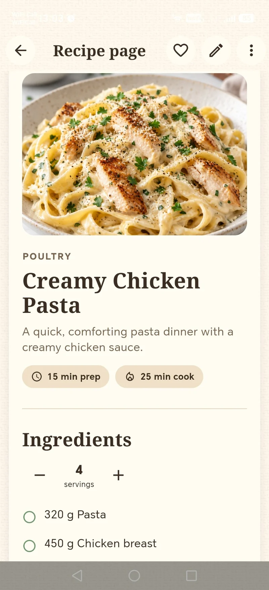
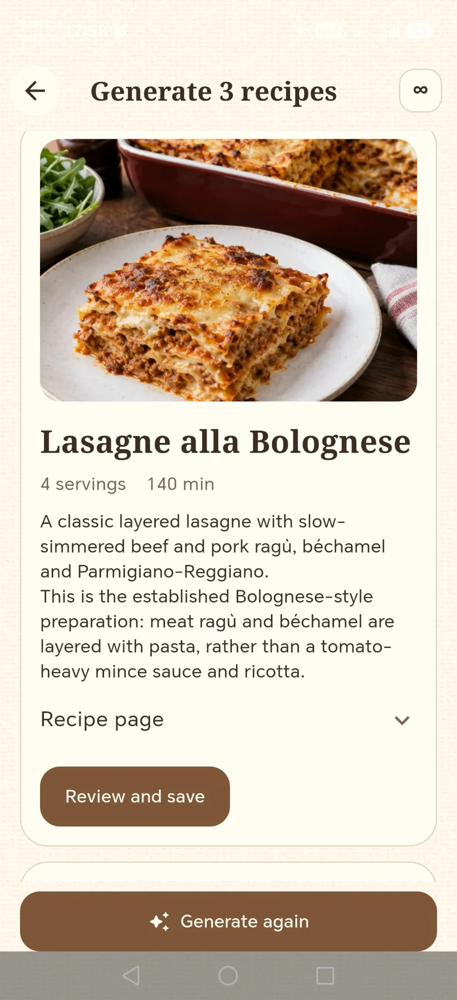
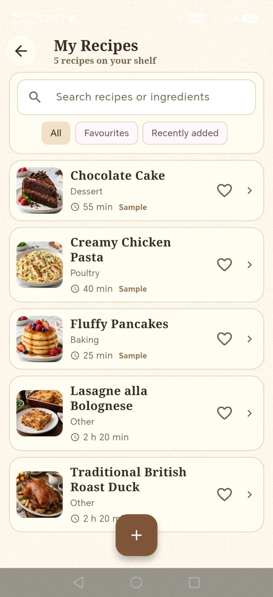
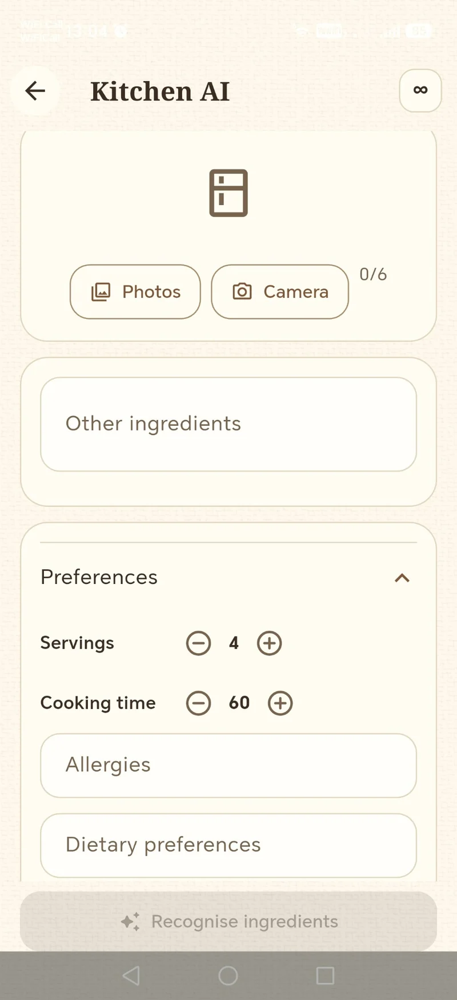
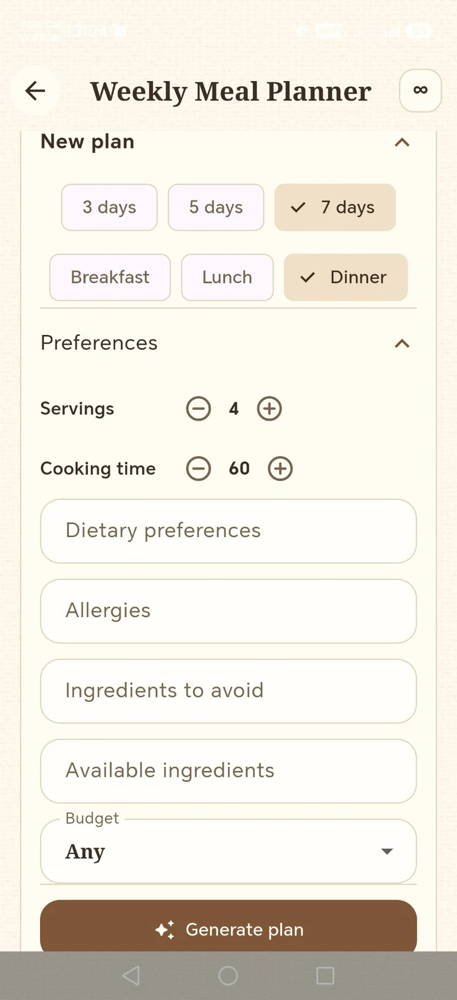
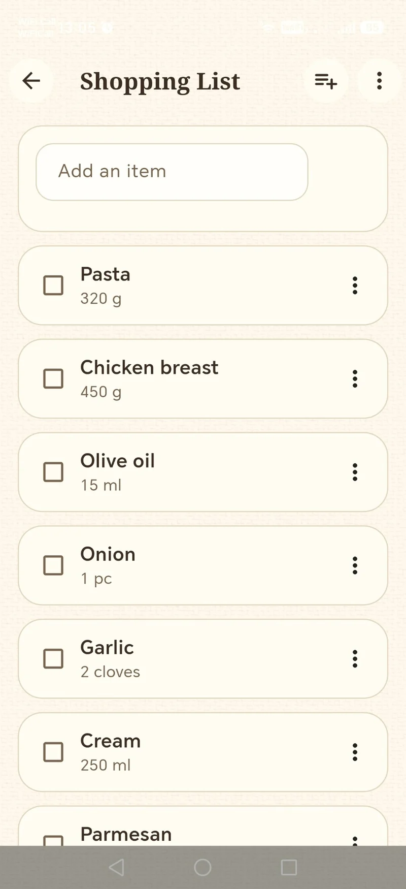
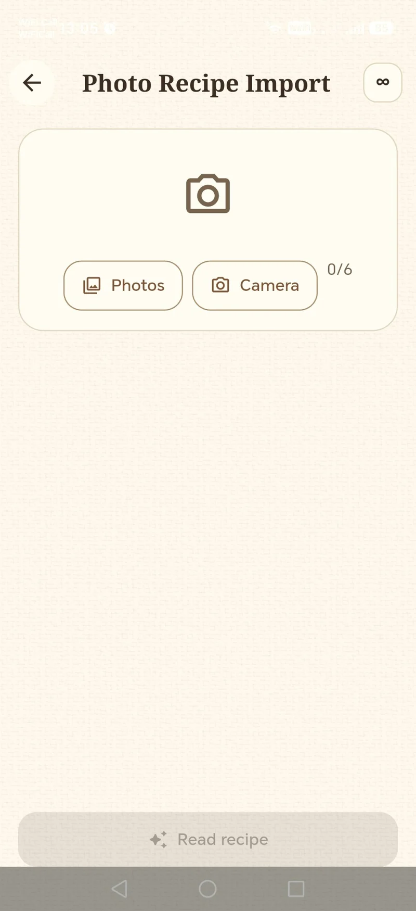

Generate recipe ideas
Describe what you'd like to cook and receive practical recipe suggestions.
Your own warm, beautifully organised cookbook — with intelligent tools to help you discover, import and adapt recipes.


Keep the recipes that matter to you and use optional AI support when you need a new idea.
Describe what you'd like to cook and receive practical recipe suggestions.
Recognise ingredients from photos, then explore meals you could prepare.
Import handwritten or photographed recipes and review uncertain details before saving.
Adjust recipes around preferences, missing ingredients or other cooking needs.
Find inspiration for the week and make everyday meal planning easier.
Ask for cooking guidance and explanations as you prepare your meal.
Actual screenshots from the Recipe Assistant Android development build — its warm parchment pages, recipe photographs and practical tools.






Screens shown are from a development version. Features, text and availability may change before the next store release.
The cookbook is yours to organise. AI is there when you want extra help — not as a replacement for your own cooking traditions.
Optional AI access is planned at £4.99 per month, with complimentary successful uses to try features first. Exact purchase availability will be confirmed with the relevant app-store release.
How access works ↗AI outputs can contain errors. Check ingredients, allergies, temperatures and food safety.